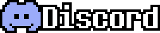

Important things:
A ton of things happened on the last few weeks, such as
more people coming to the team (MR PETER, as a musician,
and goinks, the dialoge writer) and a
few leaving (Danhx, the trailer maker),
reorganazing our team goals (we will probably release
the game on july)
and starting to give more backbone to the game (we have done a ton of progress
on phase 2 guys! can you belive it? its almost 20% done!! :D)
...oh and
im the new owner of Undertale: Shattered Souls :]
(Shell is now the co-owner with MR PETER)
Now, to the game progress!!
Team aplications?!
Due to a lack of progress on the game, we decided to make
some team aplications for
coders. The engine that we are currently using is
Clickteam Fusion so we need people that already have some
experience on it! If you want to wish to join us into this
rabbit hole that is Undertale: Shattered Souls, join our server!

I hope you enjoyed the Devlog. Cya guys next month!!